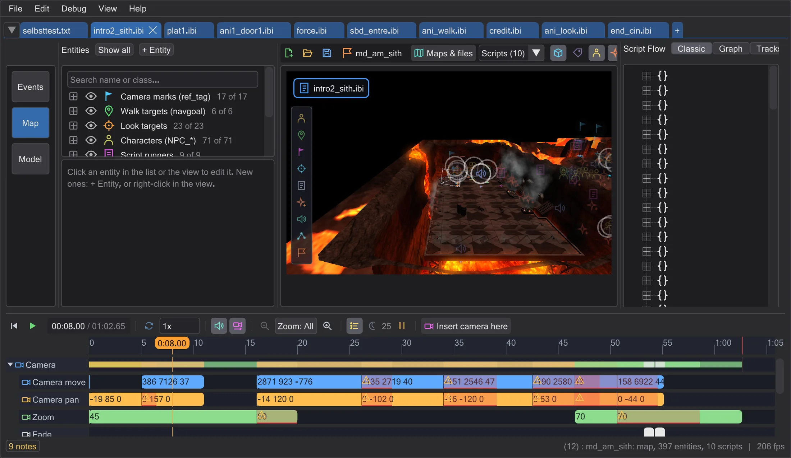
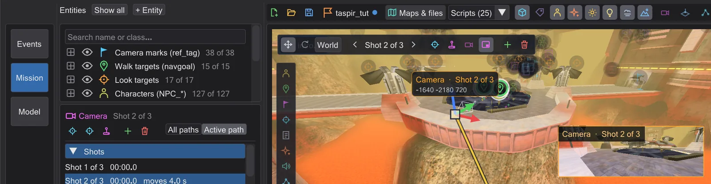
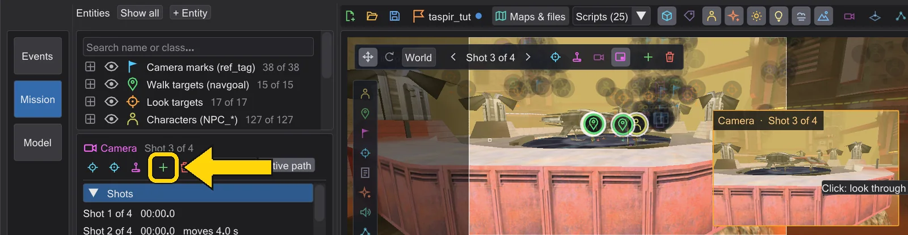
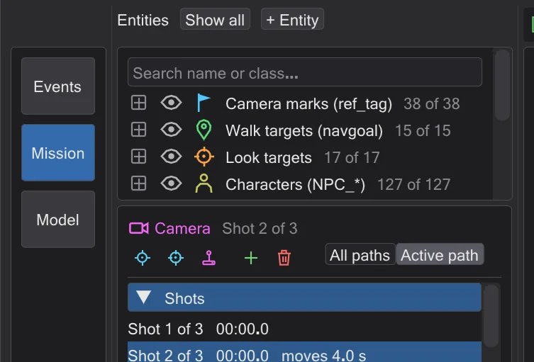

A first cutscene
Two camera shots, a smooth move between them, watched through the camera and compiled for the game.
Steps#
- 1
Open the mission. File → Load mission, choose
MD_Missions_Ep3.pk3, pickmd_am_sith. The map opens with all scripts of the mission in tabs; stay in the tabintro2_sith.
The mission is open. - 2
Select the camera. Click the camera symbol on the map (or the Camera row of the timeline). Its shots appear in the list on the left, its path on the map.

The camera is selected. - 3
Fly to a good spot and add a shot. Hold the right mouse button and fly with W A S D until you like the view. Press New camera shot here: a
camera ( MOVE )andcamera ( PAN )at your view are added after the selected shot.
A new shot at the current view. - 4
Give it a travel time. Under Selected shot set Travel time to
3(seconds): the camera now flies three seconds from the previous shot to this one.0would be a cut.
The travel time in the camera panel. - 5
Watch it. Turn on Camera preview and click the small picture to look through the camera, then press the play button (▶) under the map. The timeline plays the scene as the game will - with sound when Sound is on.

Looking through the camera while playing. - 6
Save and compile. A script from a
.pk3has no file yet, so the first save asks where to put it: choose thescriptsfolder of your mod (for exampleMD\scripts\md_am\). Compile! then writes the.ibithe game runs next to it. For a mission of your own, Save mission packs everything into a.pk3- see Your own mission.
The action column - Compile! sits below the file buttons and flashes green when it worked.


What next#
Grab the camera gizmo between two shots to set a key there (Moving and turning a shot), or fly a whole shot yourself with Pilot (Fly a shot yourself (Pilot)).